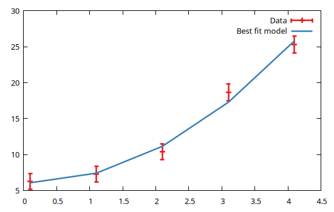

Gfit.jl
A model fitting framework for Julia.

Gfit.jl is a general purpose, data-driven model fitting framework for Julia.
It provides the basic tools to define, interactively manipulate and efficiently evaluate a (possibly very complex) model, and to fit the latter to empirical data. The main functionalities are:
- it handles datasets of any dimensionality;
- the syntax is very simple and concise as it resembles the indexing for dictionaries and the field access for structs. The most relevant functions are the self-explanatory
fit!()and the object constructors (see Basic concepts and data types); - the fitting model is evaluated on a user defined domain, and is the result of a combination of model components or mathematical expressions (in the form of lambda functions), or any arbitrary mixture of the two;
- it allows to define new model components to suit specific needs;
- model parameters can be fixed to a specific value, limited in an interval, and/or be dynamically linked (patched) to the values of other parameters;
- multiple data sets can be fitted simultaneously against different models whose parameters can optionally be patched;
- all components results are cached so that repeated evaluations with the same parameter values do not involve further calculations;
- user provided components can pre-compute quantities based on the model domain, and store them in reserved areas for re-use;
- it support different minimizers (LsqFit and CMPFit);
- it provides several facilities for interactive fitting and result displaying.
The fitting process is actually a non-linear least square regression, and is carried out by one of the above mentioned minimizer packages, whose purpose is to automatically vary the parameter values (according to the user defined constraints) until the differences between the evaluated model and the empirical data are minimized. The purpose of Gfit.jl is thus to act as an interface between the high-level model facing the user, and the low-level implementation details facing the minimizer.
Note that the purpose of GFit.jl is to allow easy manipulation of complex models, and that there may be little advantage in using it for a simple linear regression or for models involving just a single parameter, although it is definitely possible to use it also in these cases.
Installation
In the Julia REPL type:
julia> ]add GFitThe ] character starts the Julia package manager. Hit backspace key to return to Julia prompt.
In order to easily visualize the outcomes of 1D analysis you may be interested in installing also GFitViewer and/or Gnuplot.jl:
julia> ]add GFitViewer
julia> ]add GnuplotWorkflow
The typical workflow to use GFit.jl is as follows:
- Wrap empirical data domain and measures into one (ore more)
DomainandMeasuresobject(s); - Create a
Modelobject and build it by adding components or mathematical expressions, each representing a specific aspect of the theoretical model; - Optionally set initial guess parameter values, define constraints between model parameters, etc.;
- Fit the model against the data and inspect the results;
- If needed, modify the model and repeat the fitting process;
- Exploit the results and outputs.
A very simple example showing the above workflow is:
using GFit
# Prepare vectors with domain points, empirical measures an their uncertainties and
# use them to create the GFit input objects:
x = [0.1, 1.1, 2.1, 3.1, 4.1]
meas = [6.29, 7.27, 10.41, 18.67, 25.3]
unc = [1.1, 1.1, 1.1, 1.2, 1.2]
dom = Domain(x)
data = Measures(dom, meas, unc)
# Create a model using an explicit mathematical expression, and provide the
# initial guess values:
model = Model(dom, @λ (x, a2=1, a1=1, a0=5) -> (a2 .* x.^2 .+ a1 .* x .+ a0))
# Fit model to the data
res = fit!(model, data)The GFit.jl package implements a show method for many of the data types involved, hence the above code results in the following output:
Best fit parameters:
╭───────────┬────────┬───────┬───────────┬───────────┬────────┬───────╮
│ Component │ Param. │ Range │ Value │ Uncert. │ Actual │ Patch │
├───────────┼────────┼───────┼───────────┼───────────┼────────┼───────┤
│ main │ a2 │ │ 1.201 │ 0.3051 │ │ │
│ │ a1 │ │ -0.106 │ 1.317 │ │ │
│ │ a0 │ │ 6.087 │ 1.142 │ │ │
╰───────────┴────────┴───────┴───────────┴───────────┴────────┴───────╯
Fit results:
#Data : 5 #Free params : 3
DOF : 2 Red. fit stat.: 1.0129
Status: OK Elapsed time : 0 sshowing the best fit parameter values and the associated uncertaintites, as well as a few statistics concerning the fitting process.
If not saitisfied with the result you may, for instance, change the initial value for a parameter and re-run the fit:
model[:main].a0.val = 5
res = fit!(model, data)Once done, you may plot the data and the best fit model with a plotting framework of your choice. E.g., with Gnuplot.jl:
using Gnuplot
@gp coords(dom) values(data) uncerts(data) "w yerr t 'Data'" :-
@gp :- coords(domain(model)) model() "w l t 'Best fit model'"
Also, you can easily access the numerical results for further analysis, e.g.:
println("Best fit value for the offset parameter: ",
res.bestfit[:main].a0.val, " ± ",
res.bestfit[:main].a0.unc, "\n",
"Reduced χ^2: ", res.fitstat)Best fit value for the offset parameter: 6.086973486325979 ± 1.1419446422422963
Reduced χ^2: 1.0128724404974008The above example is definitely a simple one, but even more complex ones follow the same workflow.